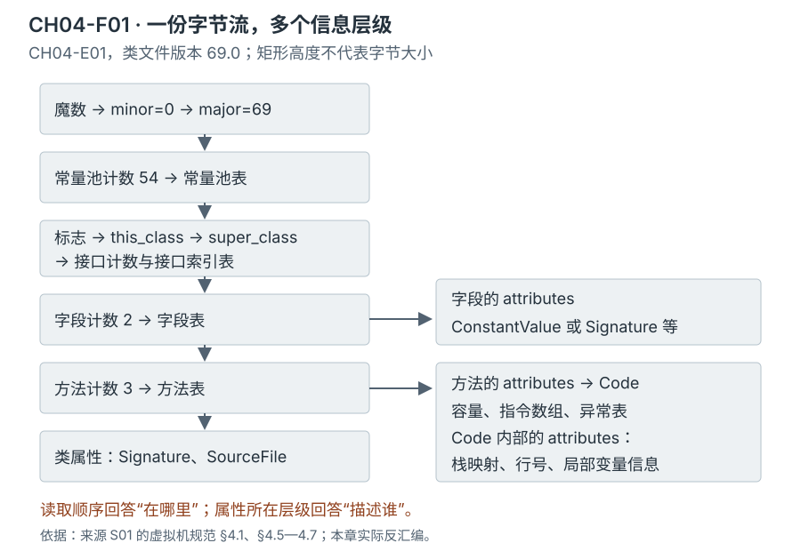
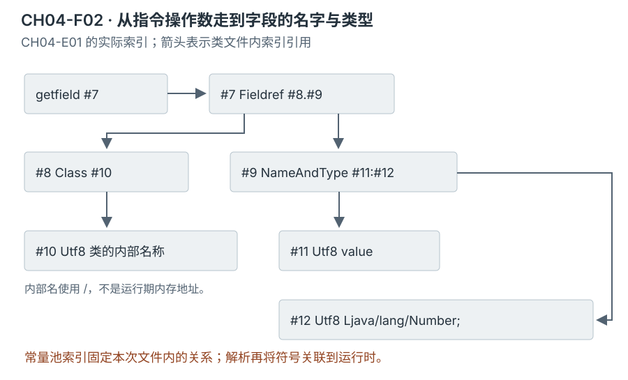
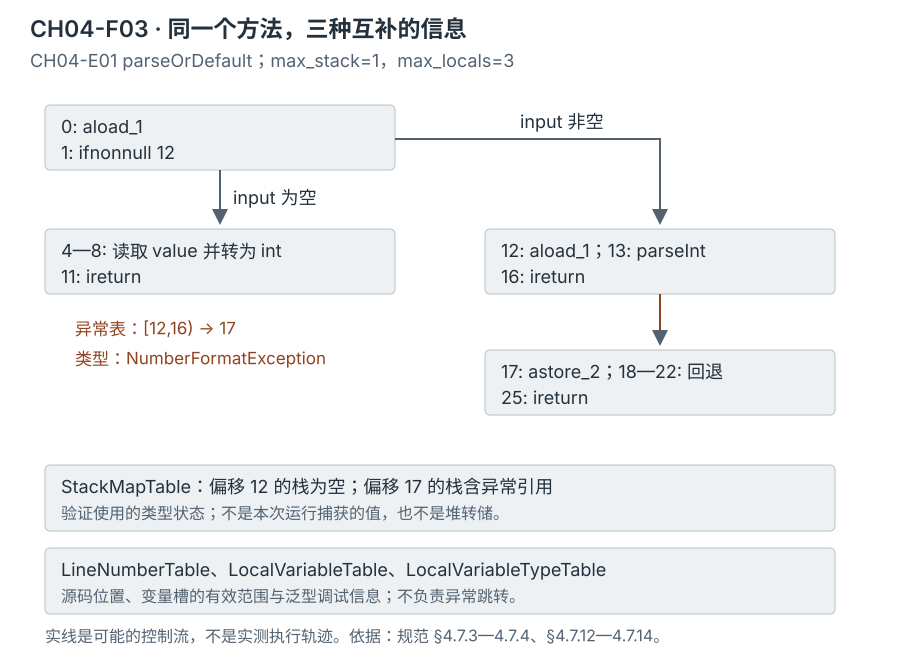

第二篇 · 第 4 章
类文件结构与信息表达
类文件怎样保存虚拟机运行所需的结构、类型和行为信息？先把它看作一组有约束的表与索引，再追踪每项信息的消费者。
本章使用 Java 开发工具包（Java Development Kit，JDK）25，以 Java 平台标准版（Java Platform, Standard Edition，Java SE）25 规范为语义依据。Java 虚拟机（Java Virtual Machine，JVM）读取的类文件不是源码的逐字保存，也不是处理器直接执行的机器码。它把声明、类型和行为转换成可链接、可验证的二进制表示。
阅读前只需理解类、字段、方法、泛型和异常处理。编译器把源码变成类文件；运行时负责加载、连接与执行；javap 是观察编译产物的工具，不参与目标程序的执行。这些分工足以支撑本章，验证算法、加载器与初始化的深入讨论分别在第 5—8 章接续。
窄屏阅读时，图、宽表和长代码可在各自区域横向滚动，以保留图内文字与代码的可读大小。
证据口径。本章观察来自 Homebrew OpenJDK 25.0.5.0.2、macOS AArch64，普通编译使用 --release 25、完整调试信息及参数名，不启用预览。实现阅读锁定提交 1775ea114f649f0314e4e43eb6c802ff16dfab7c。下文明确区分规范要求、HotSpot 实现与本次工具观察。
从一个泛型字段开始
CH04-E01 的 ClassfileSubject.java 有一个类型为 T 的字段和一个返回该字段的方法。反汇编却把它们写成 Number。另一方面，工具又能显示 T 的名字。这两种表示为什么能同时存在？
// CH04-E01，摘录；完整源码含构造器和异常处理方法。
public final class ClassfileSubject<T extends Number> {
public static final String LABEL = "classfile";
private final T value;
public T value() {
return value;
}
}答案需要沿三层信息追踪：成员表记录可执行类型的描述符；Signature 保存泛型声明；方法的 Code 通过常量池索引访问字段。下面先定位这些结构，再回答它们各自解决什么问题。
4.1 类文件总体结构
4.1.1 按字节流的顺序读取
规范要求。类文件以大端序存储多字节量：高位字节在前。规范中的 u1、u2、u4 分别表示 1、2、4 字节的无符号量。结构按定义连续排列，没有为了宿主机对齐而自动插入的空白。可变长表靠计数、条目标签或长度继续解析。[S01 §4.1]

| 顺序 | 内容与表示 | 消费者关心什么 | CH04-E01 对应 |
|---|---|---|---|
| 1 | magic、次版本、主版本 | 输入是否属于支持的类文件格式 | CAFEBABE、0、69 |
| 2 | constant_pool_count、带标签常量池条目 | 名字、字面量、类型及成员符号 | 计数 54；本例实际索引 #1—#53 |
| 3 | 访问标志、当前类、父类、接口表 | 类的性质与直接类型关系 | 0x0031；当前类 #8，父类 #2，无接口 |
| 4 | 字段计数与字段表 | 本类声明的字段及其属性 | 2 个字段：LABEL、value |
| 5 | 方法计数与方法表 | 方法签名、执行代码或其他方法信息 | 3 个方法，含构造器 <init> |
| 6 | 类级属性计数与属性表 | 整个声明的附加信息 | Signature、SourceFile |
成员表只列当前类声明的成员，不展开继承来的全部方法。构造器也由方法表描述，其特殊名称是 <init>；源码声明与方法表条目不是简单的一对一计数。类初始化方法 <clinit> 也有特殊用途，本例没有该方法，不能由“有静态字段”推定一定存在它。
属性采用“名字索引、内容长度、内容”的共同外壳。名字指向常量池中的文本，长度让读取者知道内容边界；但每种属性还有自己的允许位置、版本与结构约束。Code 是方法属性，行号表又是它的嵌套属性。把全部属性当成文件尾的一张表，会丢失“这项信息描述谁”的关系。[S01 §4.7]
ca fe ba be 00 00 00 45 00 36
└─魔数────┘ └次版┘ └主版┘ └常量池计数┘
0x45=69 0x36=54这是本次 xxd 输出前 10 字节的人工标注；完整输出在文件头记录。魔数正确只是入口条件，之后的索引、长度、标志和指令仍可能不合法。
4.1.2 格式版本、预览与运行时兼容性
类文件的 69.0 是格式版本，不是 JDK 更新版本 25.0.5.0.2 的简写。Java SE 25 的规范支持主版本 45—69；主版本从 56 起，次版本须为 0 或 65535。本轮普通编译得到 69.0。[S01 §4.1]
69.65535 表示依赖 Java SE 25 的预览特性，加载需显式启用对应预览支持。对较早版本 M.65535（56 ≤ M < 69），Java SE 25 即使启用预览也不允许加载。预览支持不是一个能接纳所有历史预览格式的通用开关。本章未编写或运行预览案例，结论依据规范和实现分支。
HotSpot 实现。ClassFileParser::verify_class_version 先拒绝超出范围的主版本，再检查次版本及预览启用条件；这些路径产生 UnsupportedClassVersionError。在 parse_stream 中，版本检查先于常量池解析，且不是关闭字节码验证就能绕开的步骤。[S04]
“运行时能读该格式”只是兼容性的一层。类库是否具有被引用的方法、模块访问是否允许、本地库是否匹配平台，仍会影响运行。--release 25 同时约束源码、目标格式及可用平台接口；把主版本号手动改小不会自动改写指令、属性或类库依赖。源码兼容、二进制兼容与实际行为差异在第 7 章进一步分开。
4.2 常量池、描述符与成员表
4.2.1 沿索引找出字段是什么
常量池不只保存“常量值”。它还保存类名、字段名、方法名、描述符以及由这些条目组成的符号引用。条目标签决定后续字节怎样解释：Class 指向类名文本；NameAndType 把成员名与描述符配对；Fieldref 再把所属类与成员信息配对。[S01 §4.4]

// CH04-E01，来自 subject.javap.txt 的实际条目
#7 = Fieldref #8.#9
#8 = Class #10
#9 = NameAndType #11:#12
#11 = Utf8 value
#12 = Utf8 Ljava/lang/Number;
// value() 的一部分
0: aload_0
1: getfield #7
4: areturn指令的操作数 #7 让虚拟机知道要访问哪个符号字段；其中没有直接写入本机地址。运行时常量池由类文件常量池建立，解析再根据类型、加载器和访问规则关联实际字段。文件里的索引关系与运行时缓存怎样组织是两层问题，第 7、8 章继续解释。
索引从 1 开始，0 通常不能引用有效条目；个别结构专门规定 0 表示缺省，例如普通 Object 类文件的父类索引。long、double 条目占据两个索引位置，后一个不可用。因此常量池计数减一并不总是可读取条目的数量。CONSTANT_Utf8 使用修改过的 Unicode 转换格式 8 位编码（Modified Unicode Transformation Format 8-bit，Modified UTF-8），不能无条件拿普通文本解码器处理其字节。
字符串字面量也不要混淆：本例 #30 String → #31 Utf8 "classfile" 描述了常量的文件表示，不能据此把该文本条目当作运行时的 String 对象。方法句柄、动态常量与动态调用也有各自的条目形式，它们不是把可执行函数体直接塞进常量池；第 15 章追踪其引导与链接过程。
| 表示 | 含义 | 解读注意 |
|---|---|---|
B C D F I J S Z | byte、char、double、float、int、long、short、boolean | 这里的字母是格式语法，不是 Java 类型名称的任意缩写 |
Ljava/lang/Number; | 引用类型 Number | 以 L 开始、分号结束；内部类名使用 / 分隔包 |
[I、[[Ljava/lang/String; | 一维 int 数组、二维 String 数组 | 每个 [ 增加一层数组维度 |
(Ljava/lang/String;)I | 接收一个 String、返回 int 的方法 | 括号内只列显式参数；实例接收者不写在描述符里 |
()V | 无显式参数、返回 void | V 只能放在方法返回位置，不能用作字段类型 |
4.2.2 描述符与泛型签名各有用途
字段表和方法表都包含访问标志、名字索引、描述符索引和属性表。对本例字段 value，描述符是 Ljava/lang/Number;；其 Signature 却是 TT;。方法 value() 的描述符为 ()Ljava/lang/Number;，签名为 ()TT;。类级签名进一步说明 T 的上界为 Number。
这体现了类型擦除后的执行类型与保留的泛型声明信息之间的分工。字段访问、方法链接和字节码类型约束依赖描述符；编译器与泛型反射等消费者可以读取签名。Signature 的存在不意味着每个对象都携带了 T 的实际类型实参，也不让 JVM 对泛型容器的每次写入自动恢复源码级参数化检查。[S01 §4.7.9；S06]
本例的 LABEL 则有 ConstantValue 属性，引用字符串常量。它与泛型签名、方法代码均不相同；属性名称表达的是不同信息用途。将来分析静态字段的准备、初始化以及编译期常量内联时，要结合第 7 章的时机规则，不能仅凭字段修饰符推导赋值过程。
4.3 方法代码与相关属性
4.3.1 Code 把容量、指令与异常处理放在一起
对普通 Java 方法，行为主体在 Code 属性里：max_stack 给出操作数栈所需的最大容量，max_locals 给出局部变量槽容量，随后是带长度的指令数组、异常处理表和嵌套属性。它们不是某次实际运行所使用的全部物理内存；long、double 等值的容量计数还具有双单位规则。抽象方法和本地方法没有 Code，不能因缺少该属性就判定方法丢失。[S01 §4.6、§4.7.3]
// CH04-E01 的实际源码：用于说明分支与异常表结构
public int parseOrDefault(String input) {
if (input == null) {
return value.intValue();
}
try {
return Integer.parseInt(input);
} catch (NumberFormatException exception) {
// 输入不符合整数格式属于本方法的正常回退契约。
return value.intValue();
}
}本次工具观察。该方法的 stack=1, locals=3。局部变量槽 0 是 this，槽 1 是输入引用，槽 2 在异常处理器中保存异常引用。逐条读取字段再调用 intValue() 时，栈顶上的接收者被返回的整数替换，本例不需要同时堆积两个操作数。这里的“容量 1”不表示方法只执行一条指令。

// CH04-E01，实际反汇编的关键片段
12: aload_1
13: invokestatic #19 // Integer.parseInt:(Ljava/lang/String;)I
16: ireturn
17: astore_2
18: aload_0
19: getfield #7
22: invokevirtual #13 // Number.intValue:()I
25: ireturn
Exception table:
from to target type
12 16 17 Class java/lang/NumberFormatException异常表的保护范围为半开区间 [12,16)；匹配类型的异常从该范围传播出来时，控制转到 17。处理器入口的操作数栈具有异常引用，astore_2 把它存入槽 2。源码的 catch 因而不需要被翻译成每条正常指令之后的一次类型比较。多个处理器的顺序具有意义；本图只画本例唯一条目。完整的异常分派与栈展开留给第 13 章。
4.3.2 验证类型、源码位置和变量名不能互相替代
StackMapTable 向验证器提供某些指令位置的局部变量与操作数栈类型状态。它不是线程转储、调用栈采样或运行期值的快照。初始帧可由方法签名等信息推导，后续帧以紧凑编码描述变化。[S01 §4.7.4、§4.10.1]
本例有两个显式帧：frame_type=12 是位于偏移 12 的 same_frame；frame_type=68 是单个栈元素的帧，其偏移增量为 68−64=4，位置为 12+4+1=17，栈元素类型是 NumberFormatException。这里的“same”描述验证状态相对于前帧的关系，不是说控制流没有变化。具体验证传播算法由第 5 章展开。
| 属性 | 保存什么 | 本例如何使用 | 不能推出什么 |
|---|---|---|---|
| StackMapTable | 特定位置的验证类型状态 | 偏移 12、17 的帧 | 不能读出某次执行的 input 值 |
| LineNumberTable | 指令起始偏移到源码行号的映射 | 偏移 12 对应源文件第 32 行 | 不是逐条指令都对应独立源码行 |
| LocalVariableTable | 变量名、描述符、槽号及有效区间 | exception 在槽 2，从偏移 18 起有效 | 槽不永久等于某个变量，其他代码可复用槽 |
| LocalVariableTypeTable | 局部变量的泛型签名及有效区间 | this 保留参数化类型的调试信息 | 不替代字段／方法描述符或栈映射 |
另有方法级 MethodParameters，本轮 -parameters 使其保存参数名；它与局部变量表不是同一机制。调试信息可因编译选项而缺省。缺少变量名并不使正常方法无法执行，验证器也不会依赖调试变量名决定栈上的类型。反过来，行号与变量名很完整，也不能补救错误的栈类型。
4.4 现代语言结构的类文件表达
4.4.1 声明特征与编译器生成成员共同存在
CH04-E02 的 ModernShapes.java 把记录类、密封接口、两种保留策略的注解以及非静态成员类放在同一组声明中。编译后得到多个独立类文件；名字中出现 $ 是本次编译器命名的一部分，类型关系仍需读取相应属性。
| 源码特征 | 本次产物中的表示 | 信息的性质与约束 |
|---|---|---|
| 运行期注解 RuntimeTag | Point 的 RuntimeVisibleAnnotations | 可供运行期注解查询使用 |
| 类文件保留注解 ClassTag | Point 的 RuntimeInvisibleAnnotations | 工具可读，普通反射注解查询不可见；SOURCE 保留策略则不保留在类文件中 |
| 记录类 Point(int x, int y) | Record 组件表、父类 Record；两个私有 final 字段、构造器、访问器及 equals/hashCode/toString 方法 | 组件属性与普通字段／方法表并存；本次对象方法含 invokedynamic 与引导信息 |
| sealed interface Shape permits Point | Shape 的 PermittedSubclasses 列出 Point | 类文件没有一个通用的 ACC_SEALED 标志替代该名单 |
| 嵌套声明 | InnerClasses；成员指向 NestHost，外层有 NestMembers | 声明嵌套与巢访问关系分别表达；局部／匿名类另可能具有 EnclosingMethod |
| Member 使用外部实例字段 | 编译器生成 this$0 字段及外部实例构造参数 | 本次字段标志为 final、synthetic；外部实例引用与巢主不是同一对象关系 |
记录类不是把字段名写进一个 Record 属性就自动获得全部方法体；访问器和构造器仍在方法表中，有普通的描述符和代码。密封类型则通过允许子类型名单表达派生约束；non-sealed 也不是一个必须存在的同名类文件属性。看到专用属性，要继续追踪对应约束；看到生成成员，也不要把某版 javac 的指令序列当成所有编译器唯一可用的翻译。[S01 §4.7.16—4.7.31]
4.4.2 可读取、可反射与可访问是不同的问题
反射从已建立的运行时类型暴露信息，不是按原始字节返回全部属性。CH04-E02 的实际输出摘录为：
Point.isRecord=true
Point.recordComponents=[int x, int y]
Point.annotations=[@org.example.jvminternals.ch04.modern.ModernShapes.RuntimeTag()]
Shape.isSealed=true
Shape.permitted=[class org.example.jvminternals.ch04.modern.ModernShapes$Point]
Member.nestHost=org.example.jvminternals.ch04.modern.ModernShapesClassTag 在 javap 的类文件输出里存在，却没有出现在这次 getDeclaredAnnotations() 结果中。此观察与保留策略吻合，但不能扩大为“任何第三方工具都不可能读取它”。类文件处理工具不必通过普通运行期注解查询来访问原始数据。
同样，知道私有字段的名字不等于可以任意访问它。访问标志、类型与加载器所决定的运行时包、模块规则以及合法巢关系共同参与访问判定。NestHost／NestMembers 支撑同巢私有成员访问，不表示成员类已经持有某个外部实例。InnerClasses 描述声明关系，也不能替代这些访问条件。[S02 §5.4.4；S07]
JVM 执行需要可链接的类型／成员信息和符合约束的代码；调试器需要行号与变量名；反射依接口契约暴露记录组件、注解、泛型等元数据。按消费者区分信息，才能解释为什么某项“看得见但不能访问”，或“没有调试信息仍能执行”。
4.5 类文件处理接口
4.5.1 读取不可变模型，按层级遍历元素
类文件应用程序编程接口（Application Programming Interface，API），即 Class-File API，位于 java.lang.classfile 及其子包。它在 JDK 24 成为正式接口，本章使用 Java SE 25 对应版本，不需预览参数。ClassFile 是带选项的处理上下文；parse 建立 ClassModel；字段、方法和代码又有自己的模型与元素。[S03]
// CH04-E03：ClassfileExplorer.main 中的读取与成员遍历片段
ClassModel model = ClassFile.of().parse(Path.of(args[0]));
for (var field : model.fields()) {
System.out.printf("field=%s descriptor=%s%n", field.fieldName().stringValue(),
field.fieldType().stringValue());
}
for (var method : model.methods()) {
System.out.printf("method=%s descriptor=%s%n", method.methodName().stringValue(),
method.methodType().stringValue());
method.code().ifPresent(code -> {
for (var element : code) {
System.out.printf(" code-element=%s%n", element);
}
});
}这些模型的逻辑内容不可变，但内部可能延迟解析。因而“parse 已返回”不等于所有字节已完整检查；后续访问也可能因格式问题抛出异常。延迟建立内部数据的方式还意味着不能从“模型不可变”直接推出任意共享访问都线程安全。
遍历 CodeModel 时，除真实指令，还会遇到标签、行号、局部变量和异常处理等元素。本次输出包含 ExceptionCatch、LineNumber 与 LocalVariable。它们帮助工具保持位置与语义关系，并不意味着每个模型元素都对应一条处理器指令或一条字节码。完整程序见 ClassfileExplorer.java。
4.5.2 生成与变换：维护派生信息，保留语义责任
CH04-E04 的 ClassfileWorkshop.java 使用构建器生成一个只有静态方法 value(boolean) 的类，再通过代码元素流把整数常量 7、−7 改为 9、−9。它不以 Java 源码为输入，也没有生成 Java 源文件；两份产物都直接是类文件字节。
// CH04-E04，生成部分的实际方法体
Label negative = code.newLabel();
code.iload(0).ifeq(negative).bipush(7).ireturn()
.labelBinding(negative).bipush(-7).ireturn();
// 同一示例的元素流变换；未改变的元素必须继续转交
if (element instanceof ConstantInstruction constant
&& constant.constantValue() instanceof Integer value) {
builder.bipush(value > 0 ? 9 : -9);
} else {
builder.with(element);
}这里的替换范围建立在本程序刚生成的唯一方法及两个常量上，不是可直接用于任意第三方类的通用变换策略。遗漏 builder.with(element) 会丢弃不匹配元素；复制时不转交标签和异常信息，也可能破坏结构。工具接口减少了手工重算偏移的工作，没有替使用者决定哪些变化符合目的。
| 项目 | 原始产物 | 变换产物 |
|---|---|---|
| 文件长度 | 190 字节 | 190 字节 |
| 偏移 4 | bipush 7 | bipush 9 |
| 偏移 7 | bipush -7 | bipush -9 |
| Code 容量 | stack=1，locals=1 | stack=1，locals=1 |
| StackMapTable | 1 个帧，frame_type=7 | 1 个帧，frame_type=7 |
本例采用 GENERATE_STACK_MAPS 显式计算栈映射；默认选项则是在需要时生成或在兼容条件下复用。本次替换没有改变指令长度、栈类型和分支目标，所以两份产物的帧结构相同。不能由这个小变换推导“任意插入指令后都可原封不动复用旧栈映射”。涉及引用类型汇合时，类型层次解析所依据的环境也影响帧的计算。
构建器根据符号信息维护常量池条目及索引。本例常量池只需类名、方法名、描述符和属性名等条目；7 与 9 由 bipush 的立即数编码，并未作为整数常量池条目存储。变换默认可共享原常量池，保留的未使用条目也不等于程序会执行它们。处理选项、格式约束及来源不同的未知属性，都应按实际用途核对。[S03；S05]
合法性与语义边界。字节生成、模型解析、javap 可读、验证器接受、类链接成功、方法执行成功和业务结果符合目标，是不同层次。API 有校验能力，但本例没有调用校验器，也没有加载或执行生成类；保留的记录只能证明本次生成、变换与反汇编所展示的事实。即使字节码类型合法，选错分支条件或常量仍会改变业务含义。
沿最短路径阅读实现
类文件处理 API 与 HotSpot 的加载解析器是两个消费者：前者让 Java 程序操作类文件模型，后者把输入转换为运行时所需的数据。不要把 ClassModel 当作 HotSpot 的 InstanceKlass，也不要把前者的延迟读取策略套到后者的全部加载流程。
| 入口 | 最短阅读路线 | 解决的问题与边界 |
|---|---|---|
ClassFileParser::parse_stream | 检查魔数／版本 → parse_constant_pool → 类型关系 → parse_fields → parse_methods → parse_classfile_attributes → 结束检查 | 按文件结构消费输入；本章只解释信息组织，不展开所有元数据布局 |
parse_methods → parse_method | 读取方法和 Code；处理异常表及嵌套属性，调用 parse_stackmap_table 等 | 读到栈映射字节与之后进行类型验证各有职责；不能把解析器入口等同整个验证器 |
parse_classfile_attributes | 识别并分派 Record、PermittedSubclasses、巢成员及注解等属性 | 专用属性有独立解析逻辑，不是见到某个名字就自动具有合法语义 |
ClassFileImpl | parse → ClassImpl；build → DirectClassBuilder；transformClass → 常量池选择 → builder.transform | 模型、构建器与变换流如何衔接；内部类名是该提交的实现细节 |
阅读时先按函数名与条件定位，再展开必要调用。源码、标签、提交、符号及链接集中登记在证据索引的 S04、S05，避免只留一个“源码目录”却无法复查结论。Homebrew 的构建适配见环境基线；本轮没有从源码重建整套运行二进制。
观察、复现步骤与常见误解
本章唯一一组正式观察记录为 ch04-20261103-01。最小构建编译了 4 个源文件，工具命令和 3 个教学进程均正常结束。没有为追逐预期输出而反复改变负载，也没有运行性能或故障案例。
在项目根目录选择已核对的 JDK 后，用 Maven 编译本章，再用同一套 javap 阅读产物。下方为本轮实际使用的编译形式；源码路径、所有观察命令、输出目录及再次生成时的目录隔离见运行说明。
JAVA_HOME=/opt/homebrew/Cellar/openjdk@25/25.0.5.0.2/libexec/openjdk.jdk/Contents/Home \
mvn --offline --batch-mode --no-transfer-progress \
-pl chapters/ch04-classfile -am compile--offline 只适用于本机已有插件缓存的情况；首次在线构建及目录迁移方法均在运行说明中区分。书内链接采用相对位置，必要图与代码片段不依赖在线渲染。
- “泛型被擦除，所以类文件没有泛型信息。”描述符擦除与 Signature 保存声明信息可以同时成立。
- “所有附加属性都只是可有可无的调试信息。”Code、栈映射、允许子类型名单与调试表的职责不同，须按属性及条件判断。
- “异常表记录了这次运行发生的异常。”它描述可能的处理关系，本次仅据编译产物重建控制流。
- “反汇编能看到私有成员，所以访问控制失效。”可读取元数据不等于有权解析或反射访问。
- “生成两份大小相同的类文件，行为就没有变化。”7 改为 9 仍可保持同样长度与栈形状，语义却已不同。
回顾与思考
类文件把运行所需信息分为有层级的结构：常量池提供可共享的名字与符号，成员表给出声明及执行类型，Code 给出行为和处理关系，属性保存特定消费者需要的补充信息。读取结构、关联符号、验证类型与执行代码各有边界；沿着信息消费者推理，比背诵字段顺序更有用。
- 从
getfield #7出发，你能依次找到所属类、字段名与描述符吗？为什么这里没有对象地址？ - 本例
value()的描述符与 Signature 分别是什么？它们怎样同时解释“返回 Number”和“返回 T”？ - 为什么异常处理器从偏移 17 开始，局部变量表中的 exception 却从偏移 18 起有效？
- 如果只移除行号表，哪些信息仍在？如果插入一条改变分支位置的指令，哪些关联必须重新维护？
- 为什么 ClassTag 在类文件里可见，却没有出现在本次普通反射查询结果中？
第 5 章继续从这些指令、异常边和类型帧推演验证过程；第 7 章解释符号解析、初始化和链接失败；第 15 章深入引导方法与动态调用。它们分别接续本章的格式、时机和执行边界。
来源与材料
- S01 规范：Java SE 25 虚拟机规范第 4 章：§4.1 格式与版本；§4.3 描述符；§4.4 常量池；§4.5—4.7 成员及属性；§4.10 验证。图与属性说明按相应小节引用。
- S02 规范：第 5 章：§5.1 运行时常量池、§5.4.4 访问控制。
- S03 接口：Java SE 25 java.lang.classfile、ClassFile 与处理选项。
- S04 实现：锁定提交的 classFileParser.cpp，重点为 parse_stream、verify_class_version、parse_method、parse_classfile_attributes；本地源码已核对。
- S05 实现：ClassFileImpl.java及ClassFile.java。
- S06 语言：Java SE 25 语言规范 §4.6 类型擦除；泛型信息的类文件格式仍见 S01 §4.7.9。
- S07 反射：Class 文档中的记录组件、密封类型、巢与元数据查询契约。